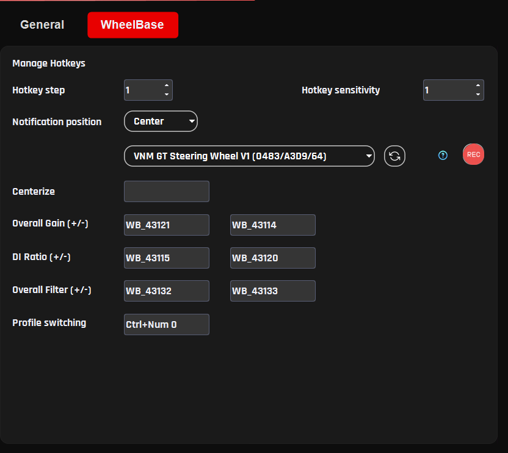

Wheelbase Profiles¶
Wheelbase Profiles allow users to save, load, and manage different wheelbase configurations.
A profile stores all current wheelbase settings, including parameters from the Basic, Advanced, and Game Settings tabs. This allows users to quickly switch between different configurations depending on the sim racing game, vehicle type, or personal driving preference.
Using profiles makes it easy to maintain separate setups for different racing scenarios, such as:
different sim racing games
different car types (Formula, GT, Rally, etc.)
different steering wheels
different Force Feedback preferences
Profiles can also be shared between users or backed up for later use.
5.1 Profile Management¶
The profile management controls are located in the Profile section of the wheelbase configuration page.
Users can perform the following actions:
create new profiles
load existing profiles
save changes to the current profile
import profiles from external files
share profiles with other users
5.2. Creating a New Profile¶
To create a new wheelbase profile:
Step 1 Click Add Profile.
Step 2 Enter a name for the new profile.
Step 3 Adjust the wheelbase settings as desired.
Step 4 Click Save to store the profile.
The new profile will now appear in the profile list.
5.3. Loading a Profile¶
To switch to a different profile:
Step 1 Open the Profile list.
Step 2 Select the desired profile.
Step 3 Click Apply.
The wheelbase will immediately load the settings stored in that profile.
5.4. Saving Profile Changes¶
If you modify any wheelbase settings, the profile can be updated to store the new configuration.
Step 1 Adjust the desired parameters.
Step 2 Click Save to store the changes in the current profile.
If the changes should not be saved, click Revert to restore the previous settings.
5.5. Importing Profiles¶
Profiles can be imported from external files.
Step 1 Click Import.
Step 2 Select the profile file.
Step 3 The profile will be added to the profile list.
This feature allows users to load profiles shared by other users or provided by VNM.
5.6. Sharing Profiles¶
Profiles can also be exported and shared with other users.
Sharing profiles is useful when:
exchanging Force Feedback setups with other sim racers
distributing recommended settings for specific games
backing up personal configurations
Recommended Usage
It is recommended to create separate profiles for each sim racing game.
Different games use different Force Feedback models, and separate profiles help maintain consistent steering behavior across titles.
5.7. Automatically Change Profile¶

Purpose
The Automatically Change Profile feature automatically switches the wheelbase profile based on the car you are using in-game. This eliminates the need for manual profile changes and ensures optimal Force Feedback for each vehicle.
Requirements
-
VNM Telemetry Plugin version >= 0.0.107
-
Applies to wheelbase profiles only
-
Not yet supported for Telemetry profiles
How It Works
-
The plugin automatically detects the game + car when selected in-game
-
Each car can be assigned to a dedicated profile
-
When you return to that car → the profile is automatically loaded
Important Note:
- If no profile is assigned to a car: → the system will use the current active profile
Setup (for new car)
When using a new car (not yet learned by the plugin), follow these steps:
Step 1 Open VNM SimCenter
Step 2 Navigate to Automatically Change Profile
Step 3 Enable the Automatically Change Profile feature
Step 4 Click Refresh to update the car list from the plugin
Step 5 Select game and car from the drop lists
Step 6 Configure Force Feedback settings as desired (Overall gain, user effects..)
Step 7 Click Save
What Happens Next
-
When you select the same car again:
-
The saved profile will be automatically loaded
-
When switching to another car:
-
The corresponding profile will be loaded (if available)
Notes
-
If the car does not appear:
-
Click Refresh
-
If the profile does not load automatically:
-
Ensure the plugin is running
-
Check plugin version (>= 0.0.107)
-
Make sure the feature is enabled
Best Practices
-
Create separate profiles for different car types:
-
GT3
-
Formula
-
Drift
-
Avoid using a single profile for all cars
-
Always click Save after making changes
-
Use clear profile names (e.g., ACC_GT3_Ferrari_296)
5.8. Hotkey to Change wheelbase settings and profile¶
Purpose
This section allows you to quickly adjust wheelbase settings and switch profiles without going to Windows.
Access
Step 1 Open VNM SimCenter
Step 2 Go to: Settings → Wheelbase
Hotkey Configuration
Hotkey step
Purpose: Defines how much the value changes with each key press
Explanation: Each press will increase/decrease the value based on this step
Recommended:
- 1--5 (depending on how fine you want the adjustment)
Hotkey sensitivity
Purpose: Controls how fast values change when holding a key
Explanation: Higher value → slower change when holding the key
Notification position
Purpose: Defines where notifications appear on screen
Options:
-
Center
-
(Other positions depending on version)
Device selection
Purpose: Select which device receives the hotkey input
Explanation: Dropdown shows the currently controlled device
Example:
- VNM GT Steering Wheel V1
Hotkey Mapping
You can assign keys to control functions directly.
How to assign keys (important)
For Overall Gain, DI Ratio, Overall Filter:
Step 1 Click the REC button
Step 2 Press the key you want to assign
Step 3 The key will be saved to that function
For Centerize and Profile switching:
Step 1 Click on the input field
Step 2 Press the key or key combination you want to assign
Centerize
Purpose: Return the wheel to center position (0°)
Overall Gain (+ / -)
Purpose: Increase / decrease overall FFB strength
Use case:
-
Reduce force if it feels too heavy
-
Increase force if feedback is too weak
DI Ratio (+ / -)
Purpose: Adjust DirectInput scaling ratio in TIC mode
Explanation: Affects how force from the game is scaled
Overall Filter (+ / -)
Purpose: Adjust FFB smoothness
Explanation:
-
Higher → smoother, less noise
-
Lower → more detail, but may feel rough
Profile switching
Purpose: Quickly switch between profiles
Example:
- Ctrl + Num 0
Click Save in the bottom-right corner to apply all changes

5.9. General Settings¶
This section controls how the wheelbase is displayed and how certain UI-related behaviors function. These settings do not directly affect Force Feedback, but help with monitoring and usability.
Wheel max angle
Purpose: Defines the maximum steering angle displayed in the software
Explanation: This value is used for UI visualization and wheel animation, not the physical steering limit of the wheelbase
Recommended:
- 1080° for most road and GT cars
Wheel angle step
Purpose: Defines how much the steering angle changes when adjusted via hotkeys
Explanation: Each hotkey press will increase or decrease the wheel angle by this value using the arrow keys (after clicking on the slider handle).
Recommended:
- 90° or 180° for quick adjustments
Show current torque in percentage
Purpose: Displays current Force Feedback output as a percentage
Explanation: Shows torque as a percentage instead of Nm, making it easier to monitor overall usage and detect limits
Enable circle animation
Purpose: Displays a circular visualization for base status
Explanation: Provides a visual indicator for:
-
Base temperature
-
Torque output
-
Error status